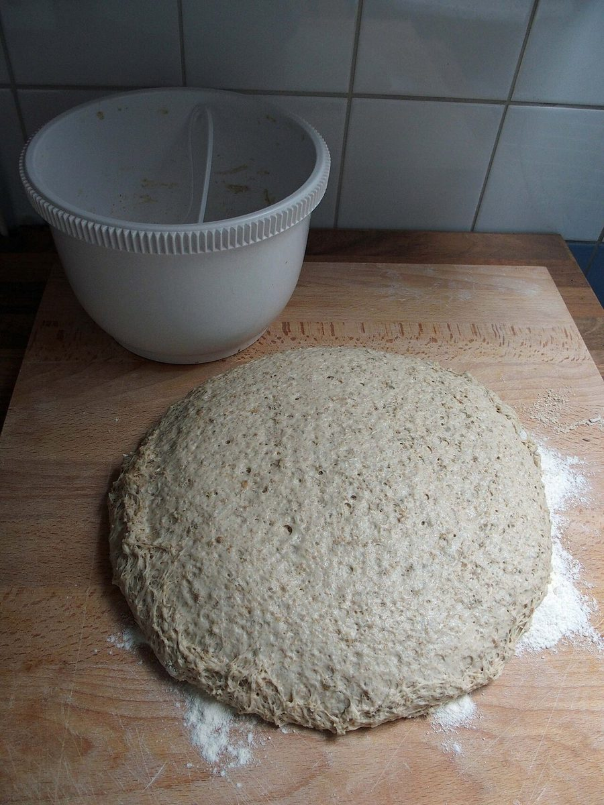
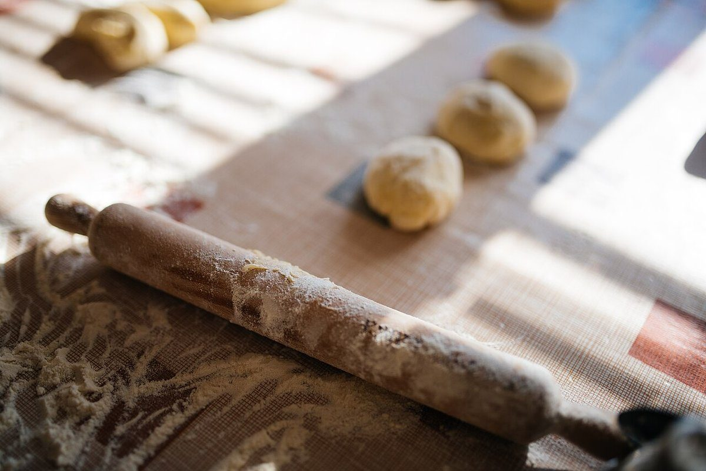

<!-- about: このページのソースについて -->
<h1>このページの「ソース」</h1>
「source」という屋号から、制作側が「ページのソースを表示する」画面を連想しました。行番号、タグ、コメントを使って、パンの出どころを一行ずつ読み進める構成にしています。
これは制作側の連想で、お店の理念・由来とは無関係です。屋号の意味や込めた思いは、ご本人にうかがったうえで書き換えます。

<h2>読みかた</h2>
- 左の数字は行番号。上から順に読んでください。
- <青い角括弧>はタグ。見出しの目印です。
- <!-- 緑のコメント -->は、写真の説明です。
- 準備中の欄は、お店から情報をいただいて埋めていきます。


<h2>確認できていること</h2>
- name
- パン工房source
- address
- 〒596-0042 大阪府岸和田市加守町4丁目30-15
- @source.1235
上記以外(営業時間・定休日・メニュー・価格・予約・駐車場など)は、すべて準備中です。